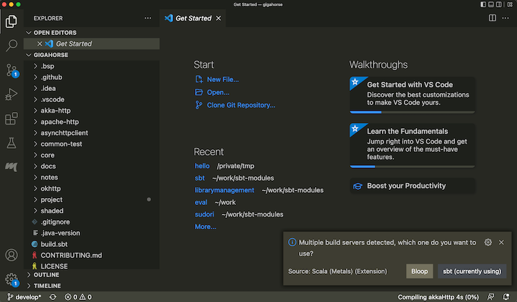
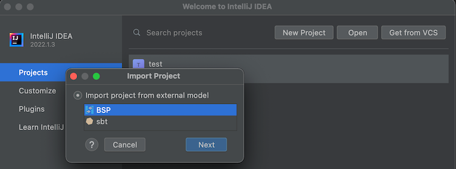

- IDE Integration
IDE Integration
While it’s possible to code Scala with just an editor and sbt, most programmers today use an Integrated Development Environment, or IDE for short. Two of the popular IDEs in Scala are Metals and IntelliJ IDEA, and they both integrate with sbt builds.
- Using sbt as Metals build server
- Importing to IntelliJ IDEA
- Using sbt as IntelliJ IDEA build server
- Using Neovim as Metals frontend
Using sbt as Metals build server
Metals is an open source language server for Scala, which can act as the backend for VS Code and other editors that support LSP. Metals in turn supports different build servers including sbt via the Build Server Protocol (BSP).
To use Metals on VS Code:
- Install Metals from Extensions tab:

- Open a directory containing a
build.sbtfile. - From the menubar, run View > Command Palette… (
Cmd-Shift-Pon macOS) “Metals: Switch build server”, and select “sbt”
 - Once the import process is complete, open a Scala file to see that code completion works:

Use the following setting to opt-out some of the subprojects from BSP.
bspEnabled := false
When you make changes to the code and save them (Cmd-S on macOS), Metals will invoke sbt to do
the actual building work.
Interactive debugging on VS Code
- Metals supports interactive debugging by setting break points in the code:

- Interactive debugging can be started by right-clicking on an unit test, and selecting “Debug Test.”
When the test hits a break point, you can inspect the values of the variables:

See Debugging page on VS Code documentation for more details on how to navigate an interactive debugging session.
Logging into sbt session
While Metals uses sbt as the build server, we can also log into the same sbt session using a thin client.
- From Terminal section, type in
sbt --client

This lets you log into the sbt session Metals has started. In there you can call testOnly and other tasks with
the code already compiled.
Importing to IntelliJ IDEA
IntelliJ IDEA is an IDE created by JetBrains, and the Community Edition is open source under Apache v2 license. IntelliJ integrates with many build tools, including sbt, to import the project. This is a more traditional approach that might be more reliable than using BSP approach.
To import a build to IntelliJ IDEA:
- Install Scala plugin on the Plugins tab:

- From Projects, open a directory containing a
build.sbtfile.

- Once the import process is complete, open a Scala file to see that code completion works.
IntelliJ Scala plugin uses its own lightweight compilation engine to detect errors, which is fast but sometimes incorrect. Per compiler-based highlighting, IntelliJ can be configured to use the Scala compiler for error highlighting.
Interactive debugging with IntelliJ IDEA
- IntelliJ supports interactive debugging by setting break points in the code:

- Interactive debugging can be started by right-clicking on an unit test, and selecting “Debug ‘<test name>‘.”
Alternatively, you can click the green “run” icon on the left part of the editor near the unit test.
When the test hits a break point, you can inspect the values of the variables:

See Debug Code page on IntelliJ documentation for more details on how to navigate an interactive debugging session.
Using sbt as IntelliJ IDEA build server (advanced)
Importing the build to IntelliJ means that you’re effectively using IntelliJ as the build tool and the compiler while you code (see also compiler-based highlighting). While many users are happy with the experience, depending on the code base some of the compilation errors may be false, it may not work well with plugins that generate sources, and generally you might want to code with the identical build semantics as sbt. Thankfully, modern IntelliJ supports alternative build servers including sbt via the Build Server Protocol (BSP).
The benefit of using BSP with IntelliJ is that you’re using sbt to do the actual build work, so if you are the kind of programmer who had sbt session up on the side, this avoids double compilation.
| Import to IntelliJ | BSP with IntelliJ | |
|---|---|---|
| Reliability | ✅ Reliable behavior | ⚠️ Less mature. Might encounter UX issues. |
| Responsiveness | ✅ | ⚠️ |
| Correctness | ⚠️ Uses its own compiler for type checking, but can be configured to use scalac | ✅ Uses Zinc + Scala compiler for type checking |
| Generated source | ❌ Generated source requires resync | ✅ |
| Build reuse | ❌ Using sbt side-by-side requires double build | ✅ |
To use sbt as build server on IntelliJ:
- Install Scala plugin on the Plugins tab.
- To use the BSP approach, do not use Open button on the Project tab:

- From menubar, click New > “Project From Existing Sources”, or Find Action (
Cmd-Shift-Pon macOS) and type “Existing” to find “Import Project From Existing Sources”:

- Open a
build.sbtfile. Select BSP when prompted:
 - Select sbt (recommended) as the tool to import the BSP workspace:

- Once the import process is complete, open a Scala file to see that code completion works:

Use the following setting to opt-out some of the subprojects from BSP.
bspEnabled := false
- Open Preferences, search BSP and check “build automatically on file save”, and uncheck “export sbt projects to Bloop before import”:

When you make changes to the code and save them (Cmd-S on macOS), IntelliJ will invoke sbt to do
the actual building work.
See also Igal Tabachnik’s Using BSP effectively in IntelliJ and Scala for more details.
Logging into sbt session
We can also log into the existing sbt session using the thin client.
- From Terminal section, type in
sbt --client
This lets you log into the sbt session IntelliJ has started. In there you can call testOnly and other tasks with
the code already compiled.
Using Neovim as Metals frontend (advanced)
Neovim is a modern fork of Vim that supports LSP out-of-box, which means it can be configured as a frontend for Metals.
Chris Kipp, who is a maintainer of Metals, created nvim-metals plugin that provides comprehensive Metals support on Neovim. To install nvim-metals, create lsp.lua under $XDG_CONFIG_HOME/nvim/lua/ based on Chris’s lsp.lua and adjust to your preference. For example, comment out its plugins section and load the listed plugins using the plugin manager of your choice such as vim-plug.
In init.vim, the file can be loaded as:
lua << END
require('lsp')
END
Per lsp.lua, g:metals_status should be displayed on the status line, which can be done using lualine.nvim etc.
- Next, open a Scala file in an sbt build using Neovim.
- Run
:MetalsInstallwhen prompted. - Run
:MetalsStartServer. - If the status line is set up, you should see something like “Connecting to sbt” or “Indexing.”

- Code completion works when you’re in Insert mode, and you can tab through the candidates:

- A build is triggered upon saving changes, and compilation errors are displayed inline:

Go to definition
- You can jump to definition of the symbol under cursor by using
gD(exact keybinding can be customized):

- Use
Ctrl-Oto return to the old buffer.
Hover
- To display the type information of the symbol under cursor, like hovering, use
Kin Normal mode:

Listing diagnostics
- To list all compilation errors and warnings, use
<leader>aa:

- Since this is in the standard quickfix list, you can use the command such as
:cnextand:cprevto nagivate through the errors and warnings. - To list just the errors, use
<leader>ae.
Interactive debugging with Neovim
- Thanks to nvim-dap, Neovim supports interactive debugging. Set break points in the code using
<leader>dt:

- Nagivate to a unit test, confirm that it’s built by hovering (
K), and then “debug continue” (<leader>dc) to start a debugger. Choose “1: RunOrTest” when prompted. - When the test hits a break point, you can inspect the values of the variables by debug hovering (
<leader>dK):

- “debug continue” (
<leader>dc) again to end the session.
See nvim-metals regarding further details.
Logging into sbt session
We can also log into the existing sbt session using the thin client.
- In a new vim window type
:terminalto start the built-in terminal. - Type in
sbt --client

Even though it’s inside Neovim, tab completion etc works fine inside.